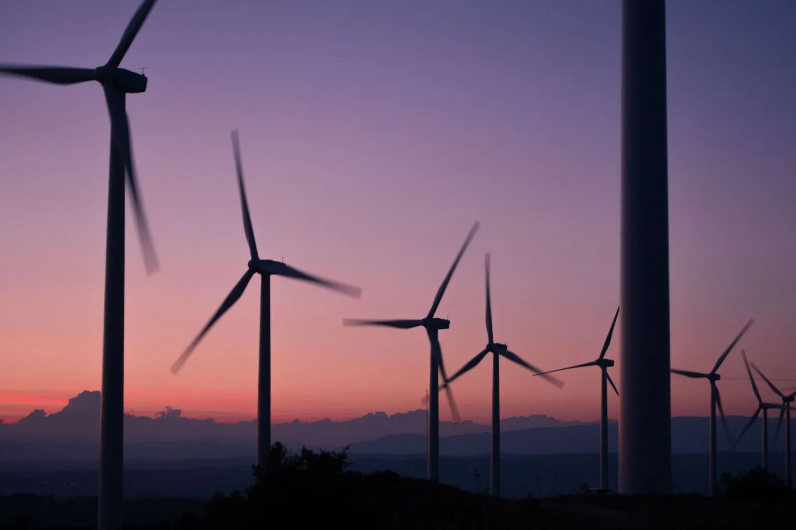
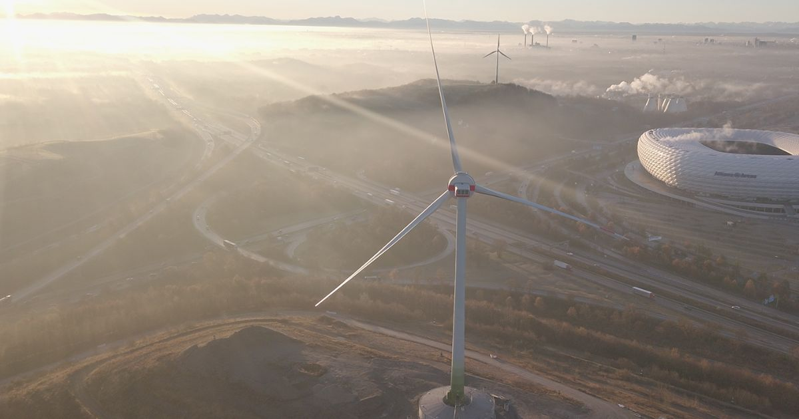

Windkraft
Die Windkraft ist eine der wichtigsten erneuerbaren Energiequellen in Deutschland und spielt eine zentrale Rolle bei der Energiewende. Sowohl Windkraftanlagen an Land (Onshore) als auch auf dem Meer (Offshore) tragen bereits erheblich zur Stromversorgung bei. Im Folgenden wird untersucht, welchen Anteil die Windenergie derzeit am deutschen Stromverbrauch hat und wie viele zusätzliche Windkraftanlagen erforderlich wären, um den gesamten Strombedarf Deutschlands ausschließlich durch Windenergie zu decken. Zudem wird die Bedeutung zukünftiger Technologien wie schwimmender Offshore-Windkraftanlagen betrachtet.

Aktueller Beitrag der Windkraft zur Stromversorgung in Deutschland
Der jährliche Stromverbrauch in Deutschland beträgt etwa 526 TWh. Aktuell werden durch Windkraft insgesamt 137,5 TWh erzeugt. Davon stammen 120 TWh aus Onshore-Windkraftanlagen und 17,5 TWh aus Offshore-Windkraftanlagen. Obwohl rund 94 % aller Windräder an Land stehen und nur 6 % auf dem Meer, erzeugen die Offshore-Anlagen einen deutlich höheren Anteil am Strom. Insgesamt entfallen etwa 87 % des Windstroms auf Onshore und 13 % auf Offshore. Bezogen auf den gesamten deutschen Stromverbrauch deckt Onshore-Windkraft rund 22,8 %, Offshore-Windkraft etwa 3,3 % ab. Zusammen werden somit ungefähr 26 % des jährlichen Strombedarfs durch Windkraft gedeckt. Anschließend wurde berechnet, wie viele zusätzliche Windräder nötig wären, um den gesamten deutschen Strombedarf ausschließlich mit Windenergie zu decken. Würde der bestehende Onshore-Bestand erhalten bleiben und der restliche Strom nur durch Offshore-Anlagen erzeugt werden, müssten zusätzlich etwa 38.850 Offshore-Windräder gebaut werden. Insgesamt wären dann rund 40.600 Offshore-Windräder vorhanden. Nach den gegebenen Flächenangaben würden dafür etwa 60 % der bebaubaren Meeresfläche benötigt, sodass der verfügbare Platz grundsätzlich ausreichen würde.

Offshore-Windenergie
Eine weitere Möglichkeit für die Zukunft sind schwimmende Offshore-Windkraftanlagen. Diese könnten auch in tieferen Gewässern errichtet werden und den nutzbaren Bereich für Offshore-Windparks deutlich vergrößern. Für Deutschland wäre diese Technologie aufgrund der ausreichend vorhandenen bebaubaren Flächen derzeit nicht zwingend notwendig. Sie könnte jedoch insbesondere für andere Länder mit tiefen Küstengewässern oder wenig flachen Meeresflächen eine sinnvolle Lösung sein, um das Potenzial der Offshore-Windkraft besser auszuschöpfen.

Fazit
Die Windkraft leistet bereits heute einen bedeutenden Beitrag zur deutschen Stromversorgung und deckt etwa ein Viertel des gesamten Strombedarfs. Dabei zeigt sich insbesondere die hohe Effizienz von Offshore-Windkraftanlagen, die trotz ihres vergleichsweise geringen Anteils an der Gesamtzahl der Windräder einen überproportional großen Teil des Windstroms erzeugen. Die Berechnungen verdeutlichen, dass eine vollständige Stromversorgung Deutschlands durch Windenergie grundsätzlich möglich wäre, jedoch einen erheblichen Ausbau der Windkraftkapazitäten erfordern würde. Sowohl zusätzliche Onshore- als auch Offshore-Anlagen könnten dazu beitragen, wobei Offshore-Windkraft aufgrund ihrer höheren Stromerträge besonders attraktiv erscheint. Zukünftige Technologien wie schwimmende Offshore-Windkraftanlagen könnten das Ausbaupotenzial zusätzlich erweitern und langfristig eine wichtige Rolle bei der nachhaltigen Energieversorgung spielen. Insgesamt zeigt die Untersuchung, dass Windenergie ein zentraler Baustein für eine klimafreundliche und zukunftssichere Stromversorgung ist.